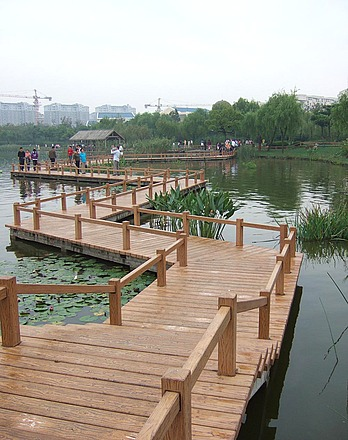
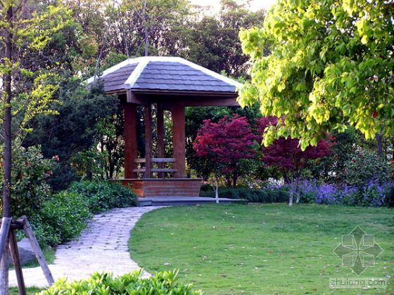
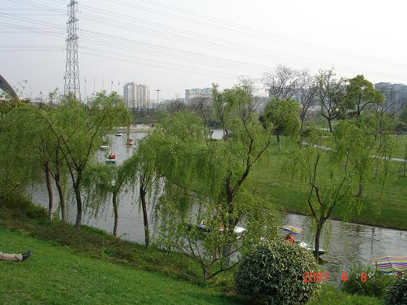
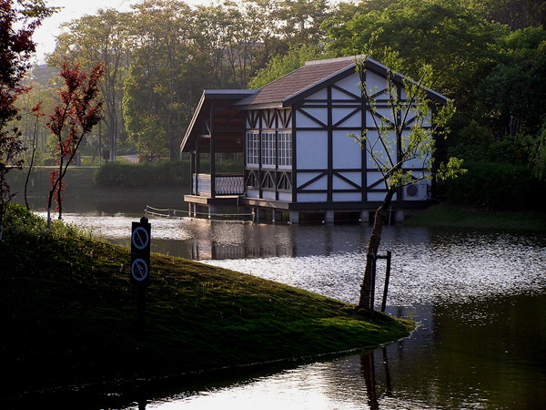
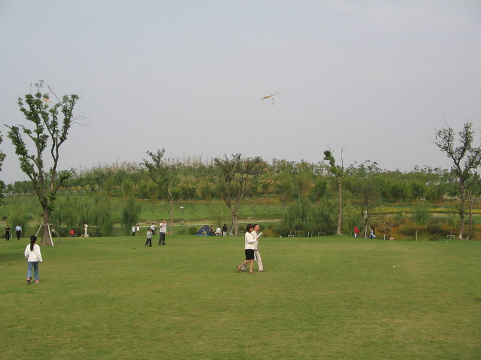
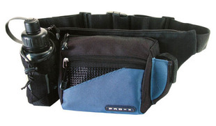
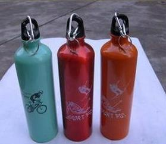
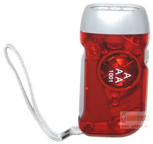
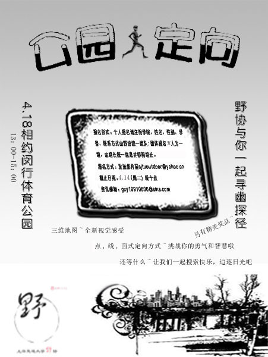

发信人: OutdoorAssoc (交大野协官方ID), 信区: outdoor
标 题: 野外生存协会公园定向大赛
发信站: 饮水思源 (2010年04月12日00:03:17 星期一)
活动时间：4月18日（周日）
活动地点：闵行体育公园
活动人数：100人（4~5人一组）
比赛时长：2小时 13：00-15：00
参赛选手：闵行校区同学为主
——让我们一起踏入久违的 镶满了春色的公园
褪去一身的忧烦
追逐满地的阳光
搜索遗落的快乐----
公园美景小窥~~~~~~~~~~~~~~~~~~~~~~~
 screen.width - 200){this.width = screen.width - 200}">
 screen.width - 200){this.width = screen.width - 200}">
 screen.width - 200){this.width = screen.width - 200}">
 screen.width - 200){this.width = screen.width - 200}">
 screen.width - 200){this.width = screen.width - 200}">
活动细则：从起点出发，照地图搜索并找到对应的点，完成打点或谜题或游戏，即获得相
应分数。在规定时间内必须回到出发点！否则不计分数！在所完成的点中计算最终得分。
按分数评出一二三等奖。
定向地图小窥~~~~~~~~~~~~~~~~~~~~~~~
screen.width - 200){this.width = screen.width - 200}">
活动奖品小窥~~~~~~~~~~~~~~~~~~~~~~~
 screen.width - 200){this.width = screen.width - 200}">
 screen.width - 200){this.width = screen.width - 200}">
 screen.width - 200){this.width = screen.width - 200}">
活动海报小窥~~~~~~~~~~~~~~~~~~~~~~~
 screen.width - 200){this.width = screen.width - 200}">
本次活动费用由协会承担，不需报名费！
报名方式：发送邮件至sjtuoutdoor@yahoo.cn
报名形式：个人报名或集体报名。个人报名请注明自己的学院、姓名、性别、学号和联系
方式，发送邮件即可，组队由野协完成；集体报名以5人为单位，其中一人为队长，由队
长统一将组员的信息（如上）发给我们。截止：周三晚十点。
--
以热爱户外为荣 以远离自然为耻 以团队合作为荣 以个人主义为耻
以关心妹妹为荣 以目的不纯为耻 以互相帮助为荣 以自私自利为耻
以保护环境为荣 以破坏自然为耻 以朴实户外为荣 以攀比装备为耻
以积极探索为荣 以盲目冒险为耻 以四海一家为荣 以狭隘户外为耻
※ 来源:·饮水思源 bbs.sjtu.edu.cn·[FROM: 211.80.60.158]
|